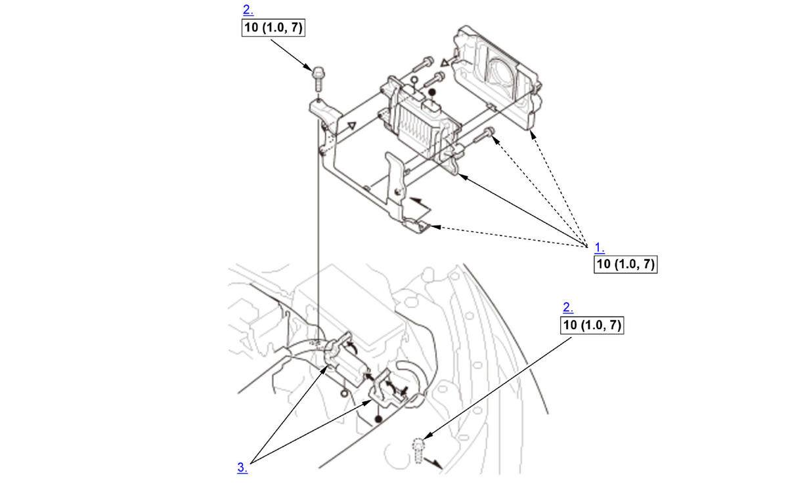

PCM Removal and Installation: Installation: Procedure
NOTE:
Numbered call-outs in figure pertain to list numbers in following procedure.

 Courtesy of HONDA, U.S.A., INC.
Courtesy of HONDA, U.S.A., INC. |
Torque: N.m (kgf.m, lbf.ft) |
- PCM - Install
- Bolts - Tighten
- Connector (PCM) - Connect
- SCS - Open
1. Exit the SCS mode with the HDS. Procedure After Replacing PCM
- VIN - Input
1. Turn the vehicle to the ON mode. NOTE: DTC P0630 VIN Not Programmed or Mismatch may be stored because the VIN has not been programmed into the PCM; ignore it, and continue this procedure.
2. Manually input the VIN to the PCM with the HDS.
- IMMOBI SYSTEM - Registration
1. Without keyless access system: Do the immobilizer system registration procedure .
With keyless access system: Do the keyless access system registration procedure . - WRITE DATA (Engine Oil Life) - Select
NOTE: If the READ DATA (Engine Oil Life) failed in "READ DATA (Engine Oil Life) - Select", skip this procedure. 1. Select the REPLACE PCM MENU, then select WRITE DATA, and follow the screen prompts.
- Other Procedures for PCM Replacement - Do
1. If the READ DATA failed in "READ DATA (Engine Oil Life) - Select", do these procedures: - DTC - Clear
1. Clear the Pending or Confirmed DTCs with the HDS. - PCM - Update
- PCM - Idle Learn
- CKP Pattern - Clear/Learn